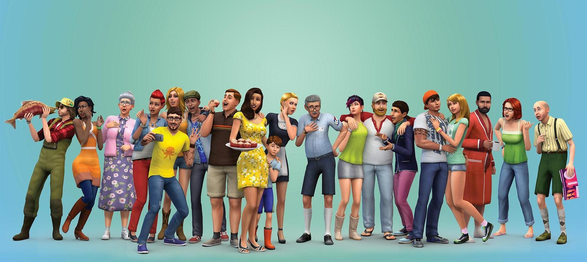
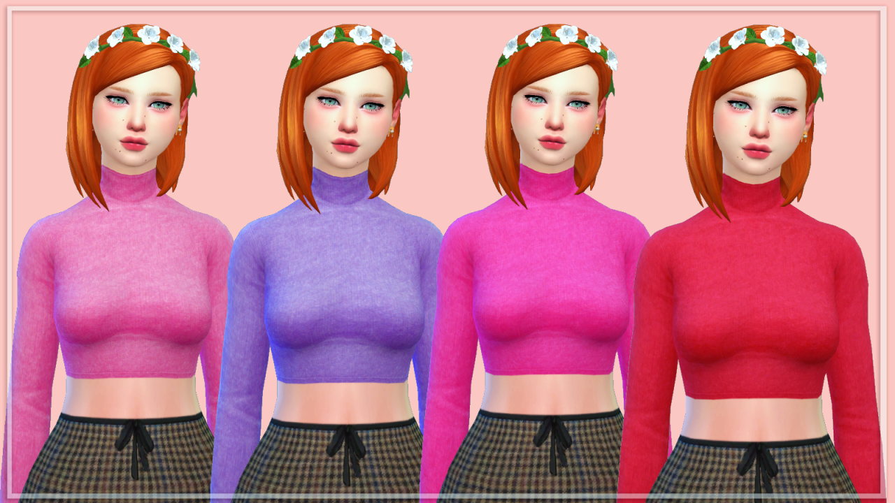
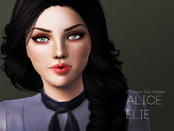
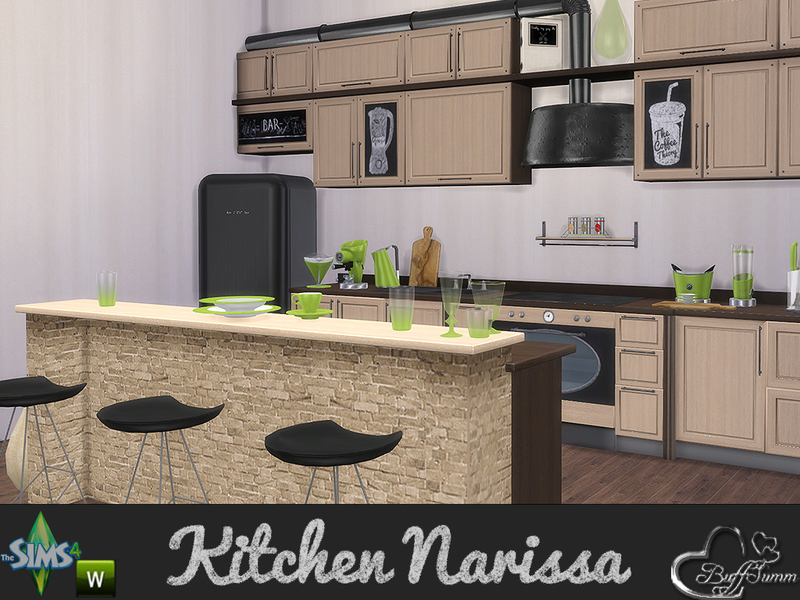
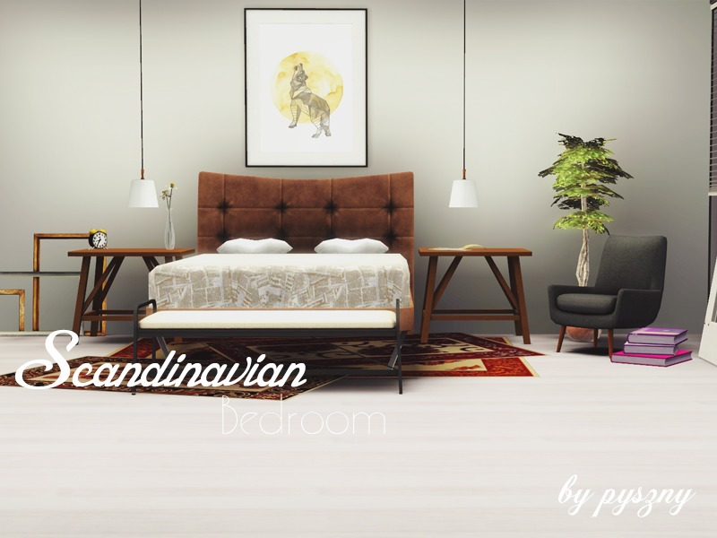
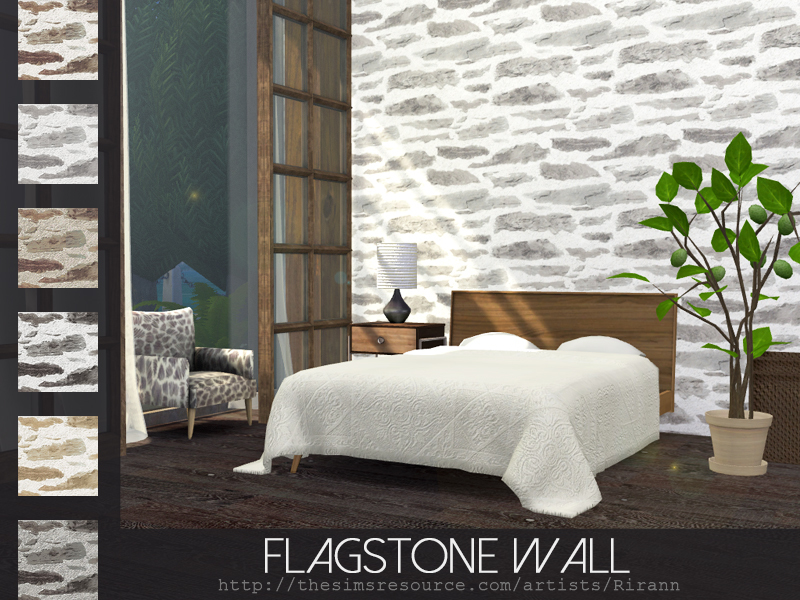
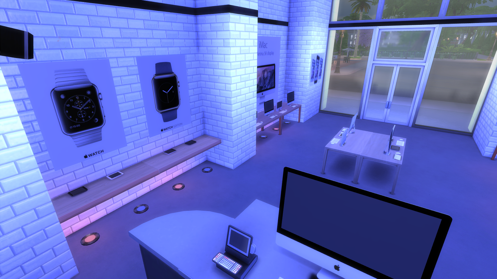
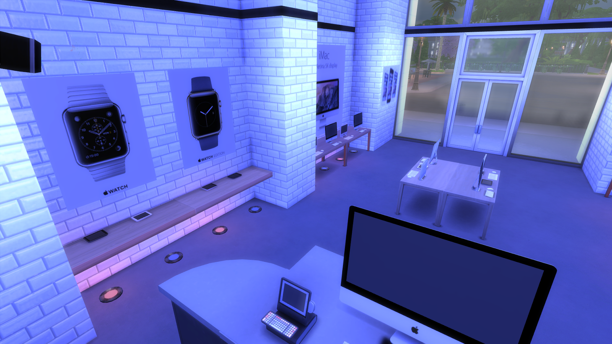

Custom content is fan-generated content made by players for players. Custom content has always been a part of The Sims series, at least for the PC and Mac games in it. The term "custom content" generally wasn't used when talking about content for The Sims, but much was made and quite a lot is still available. With the release of The Sims 2, EA/Maxis began referring to user-made content as "custom content", and the usage caught on. The Sims does not distinguish between custom content and Maxis content, but The Sims 2 and The Sims 3 do. In these games, custom content is marked with a "star", which is basically an asterisk.
In The Sims 2, players who wish to use custom content must specifically enable it, and must re-enable it after adding a new expansion pack or stuff pack. For players with Nightlife or later, or any stuff pack, the dialog which allows this must be enabled in Game Options. Players who want to use custom buy mode and build mode objects must also go into Game Options and tell the game to show custom content in the catalogs. Players who want to use recolors of Maxis buy and build objects must use the Color Enabler Package from modthesims. Installing custom content in The Sims 3 requires some instructions and framework.
Long Sleeve Maxis Recolor Much custom content allows players to make aesthetic changes to Sims; skins for The Sims, clothing, accessories, and genetics (hair color, hair styles, eye color, skin color, etc.) for The Sims 2 and The Sims 3. Skins/clothes often use custom meshes. Objects are another popular type of custom content. Customizing an object often involves recoloring all or part of it, but may involve changing its shape. Some creators have even made what are effectively new objects. Custom walls and floors have always been popular, as have custom lots, houses, and buildings. The Sims 2 allows custom terrain (made in SimCity 4), neighborhoods, and sub-neighborhoods. The Create-A-World tool for The Sims 3 allows the creation of custom terrain and neighborhoods. A particular sub-class of custom content is default replacements. Despite the name, a default replacement does not literally replace anything in the game's files. Instead, a default replacement is made so that it will be used instead of one of the game's default items. Because of this, a default replacement may not show the custom-content indicator. Default-replacement items are often used to address issues that players may have with a default item. Some players also use default replacements for genetic items such as eyes.
Sims with custom content Some content for The Sims was what players of later games would recognize as mods, but most game modifications for The Sims took the form of "hacked objects", objects that were modified to have new functions and interactions. Object hacking was frequently a way of getting around limitations of the game engine. For example, there are hacked objects which allow players to move Sims from one family to another without using the "Marriage" or "Move In" interactions, or to remove them from the game. With a little creativity, players could use these objects to move Sims into their own houses, even though the game itself did not provide for that. There was also some promotional content made for The Sims in the form of custom content, such as the McDonald's Food Kiosk. "Modding" really came into its own with The Sims 2, and modifications for The Sims 2, The Sims 3, and The Sims 4 can do everything from fix issues and annoyances to make changes in gameplay.
Rooms built with custom content TIP: Keep downloaded files organized and the number small. Custom content can consume too much RAM. It also makes it easier to track down problems.
Apple Store for Sims 4 
